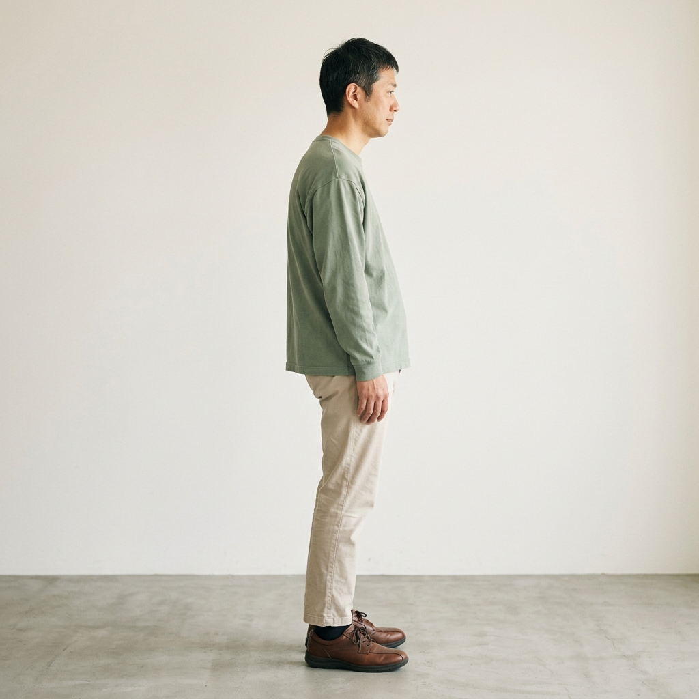
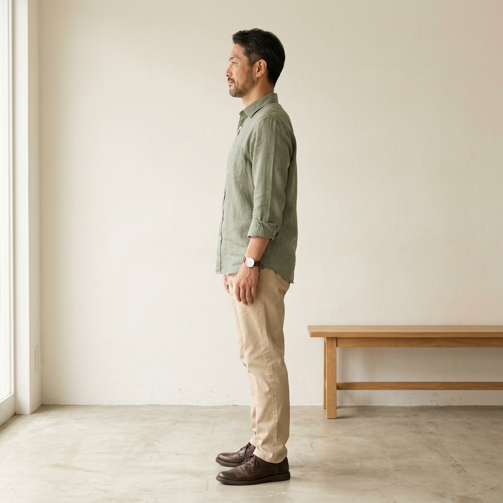
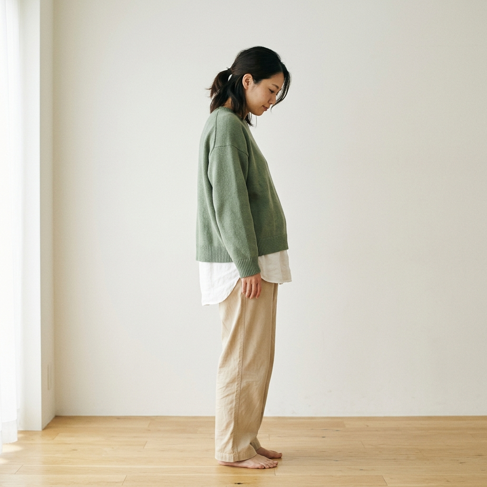
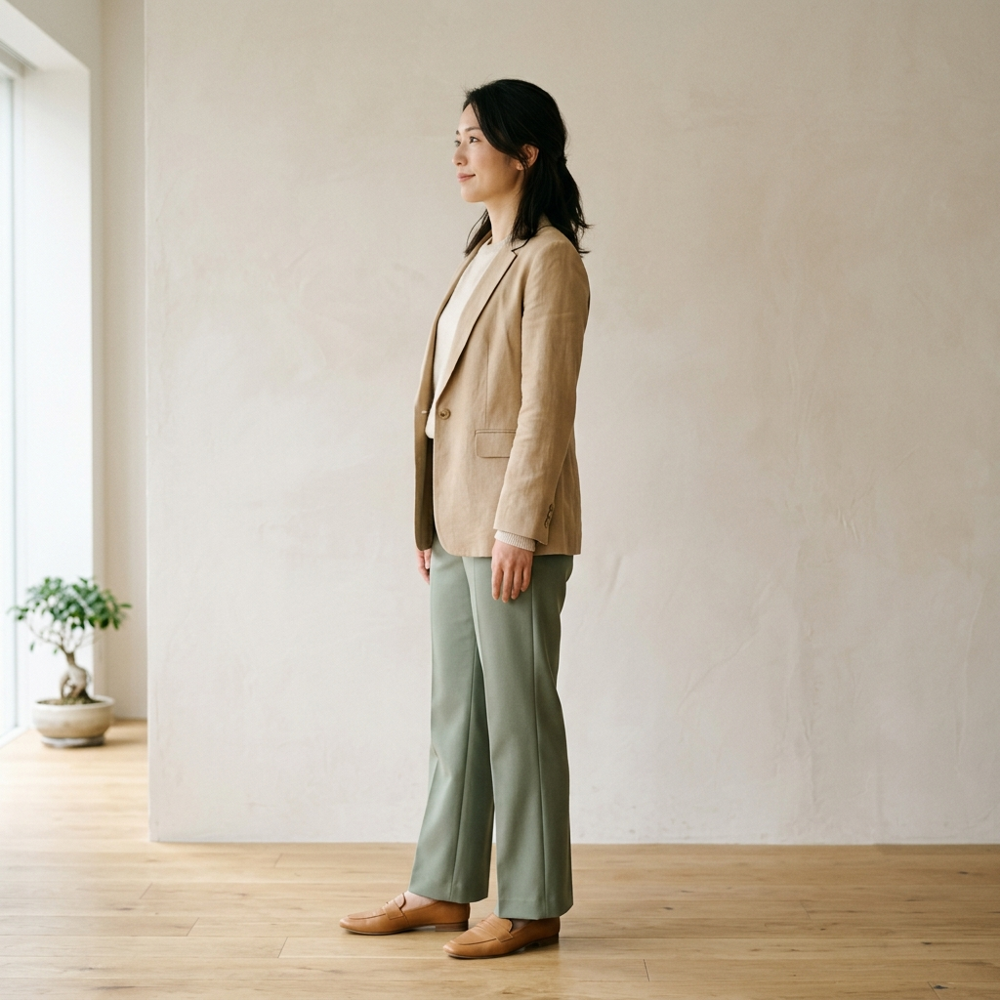

Patient Voice
お客様の声
患者さまからのメッセージ
実際にご来院いただいた患者さまの声をご紹介します。
※お客様の許可をいただき掲載しています。
仕事柄、長時間のデスクワークで腰への負担が大きく、朝起き上がるのもつらい日々が続いていました。こちらに通いはじめてから3回目には明らかに変化を感じ、今では腰の不安なく通勤できています。先生の説明もわかりやすく、毎回通うのが楽しみです。
肩こりが原因の頭痛で、毎日鎮痛剤を飲んでいたほどでした。鍼灸は怖いイメージがあったのですが、先生がとても丁寧に説明してくださり、初回から安心して受けられました。今は薬なしで仕事に集中できています。
第二子出産後、骨盤のゆがみと腰痛がひどくて育児に支障が出ていました。3ヶ月コースで継続的にケアしていただき、体型も体調も産前に近い状態に戻ってきました。先生やスタッフの方が子どもにも優しく接してくださり、本当に助かりました。
40代になってから身体の疲れが抜けにくくなり、週末も寝て過ごすことが増えていました。先生に相談すると、自律神経の乱れが原因かもしれないと鍼灸を勧めていただきました。今では週末もアクティブに過ごせるようになり、仕事へのモチベーションも戻ってきました。
突然のぎっくり腰で歩くのもやっとの状態でしたが、当日に診ていただき、翌日には仕事に復帰できました。電気療法と手技の組み合わせで想像以上に早く回復できてびっくりしました。今はぎっくり腰の予防で月1回通っています。
趣味のランニングで膝を痛めてしまい、走れない日々が続いていました。こちらで骨盤のゆがみや走り方の癖を丁寧に診ていただき、適切なアドバイスで3ヶ月後にはハーフマラソンに参加できるまで回復しました。
改善事例
施術前後の身体の変化をご紹介します。
※掲載はお客様の同意を得ております。個人差があります。


慢性腰痛の改善事例（40代男性）
10年来の腰痛。施術前は骨盤が後傾し腰部に過剰な負担がかかっていました。整体と鍼灸を6回施術後、骨盤の傾きが整い、腰痛がほぼ消失。姿勢も改善されました。


産後骨盤ケアの改善事例（30代女性）
産後3ヶ月の骨盤ケアコース。出産による骨盤の開きと左右差を3ヶ月かけて丁寧に整えました。腰痛・股関節の違和感も解消し、体型も産前に近い状態に戻りました。